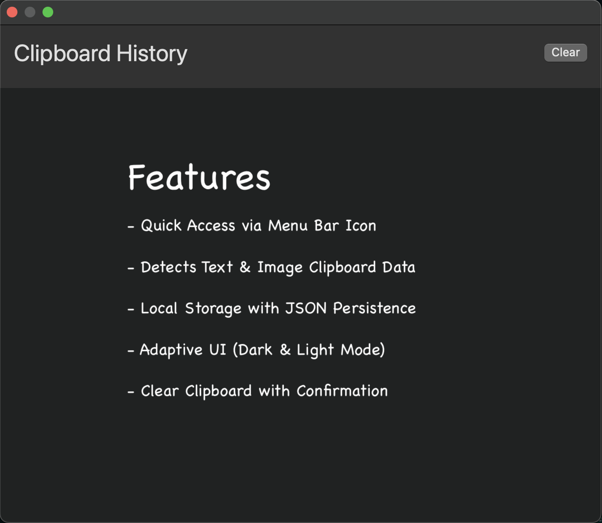

Clipboard History Manager
A lightweight macOS clipboard manager that stores text & images, runs in the background.

Features
Quick Access via Menu Bar Icon
Detects Text & Image Clipboard Data
Local Storage with JSON Persistence
Adaptive UI (Dark & Light Mode)
Global Hotkey:
Cmd + Ctrl + V
Clear Clipboard with Confirmation